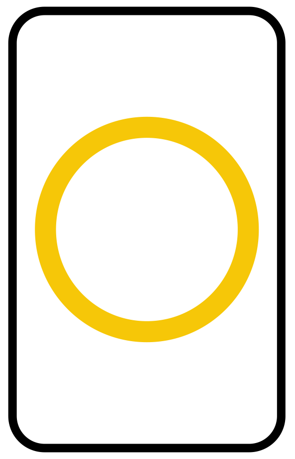
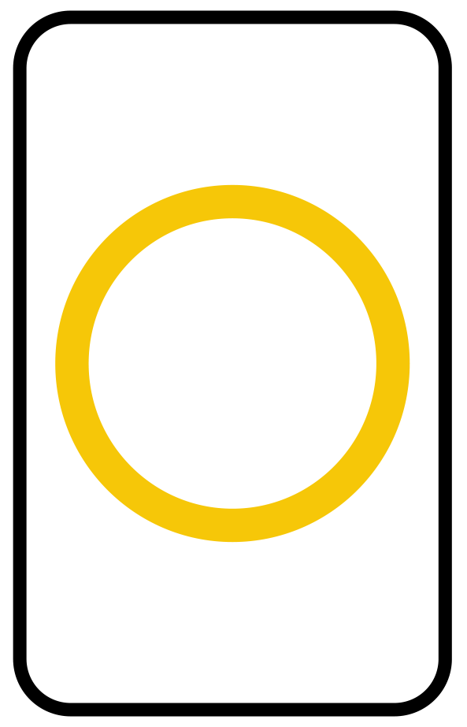

ESP was designed in the 1930's by J. B. Rhine and Karl Zener from the Duke University Psychology Department.
Let's go!
How many cards can you guess?
Since there are only 5 different symbols, the chance of guessing any one card is 1/5 (20%).
If you guessed anything more than this, it proves that you have developed intuition!
Ready? Center your thoughts on the card and guess it by clicking the images below.
The classic Zener test has 25 attempts.
 
